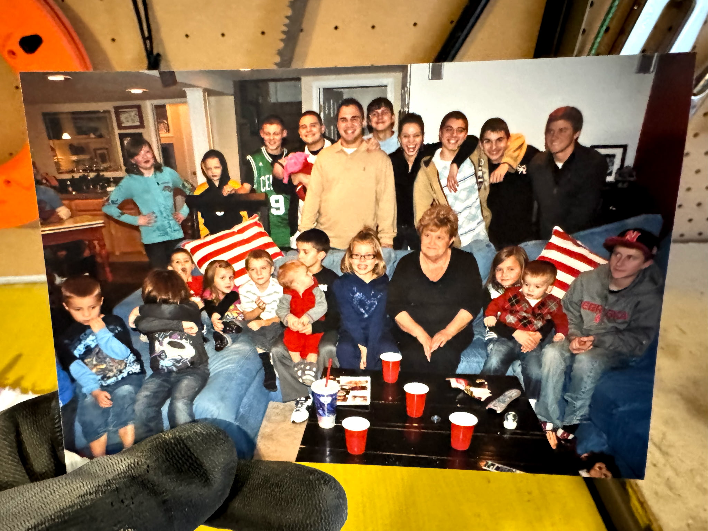

I am a lifelong Omaha native. Omaha South class of '83. I've recently turned 60 and am still going strong! Family is incrediby important to me. I was the third born of 11 kids, so I spent much of my early years raising my younger brother and sisters and have become the lynchpin in holding the family together as we have grown up and each built our own lives. With this large of a family most of South Omaha know at least one of us and keeping this many people connected can be a full time job.

I am a busy man that likes to work hard and play hard. My careers have spanned owning a tree servicing company for 10 years, and being an electrician now for 20 years. I still do tree work, but now just for family and trying to do less each year. I've done my time in the stockyards as many do from South Omaha and have done odd jobs as they've come along. This all has given me the ability to be handy and figure out how to do any project or handle any problem that comes my way. I grew up tough and always pushed my son into working with his head rather than his hands as I've got the scars, plates and screws to show what a life of hard work will often lead to.
Despite that, I've taken my son to work and help me every step of the way. While I'm far from perfect, I've always tried to do right by him and giving him the skills while also showing him why I don't want him to get into this work. This is something I feel has put him on the right path.